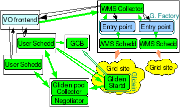

This document walks you through the steps to troubleshoot your glideinWMS installation in order to get your jobs running. This manual does not necessarily cover all the possible errors however it guides the user through the steps required to find potential problems, where the log files are and where to look for possible debugging information. This manual assumes that you have installed and started the required glideinWMS services. Please refer to the glideinWMS installation instructions for the installation instructions. Where ever applicable, this document makes references to the installation manual.
1.1 Prerequisites

We will refer to the glideinWMS diagram above while describing the troubleshooting steps.
This guide will walk through this diagram through the life cycle of a job and how different glideinWMS services interact with each other until the job runs to completion.
- A Job is submitted to the user pool
- Frontend maps your job to an entry point
- The factory submits a glidein to the entry point
- The glidein starts on the remote machine
- The new resource is registered
- The user pool assigns the job to the resource.
- The job runs on the resource
- The glidein completes
In order to complete this guide, you will need to have the above components of GlideWMS installed as well as the below software products. Please verify that all products are compatible with your environment:
| Software Products |
Version |
Comments |
| glideinWMS |
V2.x |
Should work for other versions with minor differences. |
| Condor |
Latest version |
|
| VDT |
Latest version |
|
You will also need a job to run. Create a shell script for a simple hello world (e.g. myjob.sh):
#!/usr/bin/env bash
echo hello world
Then, create a job file for this (e.g. myjob.job):
requirements = (Memory >= 1 && OpSys == "LINUX" ) && (Arch == "INTEL" || Arch == "X86_64")
universe = vanilla
executable = <DIRECTORY>/myjob.sh
arguments = 70
notification = Error
input =
output = <DIRECTORY>/test_job.output.$(Process)
error = <DIRECTORY>/test_job.error.$(Process)
log = <DIRECTORY>/test_job.log.$(Process)
should_transfer_files = YES
when_to_transfer_output = ON_EXIT
queue 1
Replace
<DIRECTORY> with the directory you have created the shell script.
The following will submit the job to the user pool collector.
source GLIDEINWMS_POOLCOLLECTOR_HOME/condor.sh
condor_submit myjob.job
1.2 Definitions
Variables used through out the upgrade process are explained below. The values of these variable may change based on your installation.
| Variable |
Comments |
Default |
| GLIDEINWMS_HOME |
Directory where glideinWMS binaries will be installed |
/home/gfactory/glideinWMS |
| GLIDECONDOR_HOME |
Directory where condor is installed |
/home/gfactory/glidecondor |
| GLIDEINWMS_INSTALLABLE_DIR |
Directory where you have extracted the glideinWMS installable |
/home/gfactory/glideinWMS |
| GLIDEINWMS_POOLCOLLECTOR_HOME |
Directory where glideinWMS pool collector is installed |
/home/gfactory/glidecondor |
| GLIDEINWMS_USERSCHEDD_HOME |
Directory where glideinWMS user schedd is installed |
|
| GLIDEINWMS_WMSCOLLECTOR_HOME |
Directory where glideinWMS collector is installed |
/home/gfactory/glidecondor |
| GLIDEINWMS_GFACTORY_HOME |
Directory where the glideinWMS GFactory is installed |
/home/gfactory/glideinsubmit/glidein_v1_0 |
| GLIDEINWMS_VOFRONTEND_HOME |
Directory where the glideinWMS VO front end is installed |
/home/frontend/frontstage |
| GLIDEINWMS_GLIDEINSUBMITDIR |
Directory containing configuration for gfactory and glideins |
|
This section contains tips and troubles relevant to all phases of a job's execution.
2.1 Authentication Issues
Many glideinWMS issues are caused by authentication. Make sure that your proxy and
certificate are correct. Each process needs a proxy/cert that is owned by that user.
Also, make sure that this cert has authorization to run a job by running a command such as
(all on one line):
X509_USER_CERT=/tmp/x509up_u<UID> globus-job-run -a -r <gatekeeper in factory config>
Note that /tmp/x509up_u<UID> is the typical location for kerberos certificates, but use
the proper location if the place of your server certificate varies.
2.2 Wrong condor.sh sourced
Always source the correct condor.sh before running any commands.
Many problems are caused are by using the wrong path/environment,
(for instance, sourcing the user pool condor.sh then running WMS collector commands).
Run "which condor_q" to see if your path is correct.
Note: If you are using VDT and source the setup.sh (e.g. for voms-proxy-init),
this may change your path/environment, and you may need to run condor.sh again.
Symptoms: Error submitting user job
Useful files: GLIDEINWMS_USERSCHEDD_HOME/condor_local/logs/SchedLog
Debugging Steps:
If you encounter errors submitting your job using condor_submit, the error messages printed on the screen will be useful in identifying potential problems. Occasionally, you can additional information in the condor schedd logs.
Always make sure that you have sourced the condor.sh and that the path and environment is correct.
source $GLIDEINWMS_USERSCHEDD_HOME/condor.sh
Based on the actual condor scheduler, you can find scheduler logfile, SchedLog, in one of the sub directories of directory listed by “condor_config_val local_dir”
If you are installing all services on one machine (not recommended but sometimes useful for testing) make sure that the user collector and wms collector are on two different ports (such as 9618 and 8618). You can do "ps -ef" to see if the processes are started (should be multiple condor_masters, condor_schedds and condor_procd for each machine). Make sure they are running as the proper users (user schedd should be probably be run as root. wms collector should be run as root if you want privsep).
Also refer to the Collector install for verification steps.
Symptoms:User job stays idle and there are no glideins submitted that correspond to your job.
This step involves the interaction of the VO frontend and WMS Factory. Hence, there are two separate facilities to see why no glideins are being created.
4.1 Frontend unable to map your job to any entry point
Symptoms: User job stays idle and there is no information in the frontend logs about glideins required to run your job.
Useful files:
GLIDEINWMS_VOFRONTEND_HOME/log/*
GLIDEINWMS_VOFRONTEND_HOME/group_<GROUP_NAME>/log/*
Debugging Steps:
Check if the VO frontend is running. If not start it.
VO Frontend processes periodically query for user jobs in the user schedd. Once you have submitted the job, VO frontend should notice it during its next queering cycle. Once the frontend identifies potential entry points that can run your job, it will reflect this information in the glideclient classad in WMS collector for that corresponding entry point. You can find this information by running “condor_status -any -pool <wms collector fqdn>”
Check for error messages in logs located in GLIDEINWMS_VOFRONTEND_HOME/log. Assuming that you have named frontend main group as “main”, check the log files in GLIDEINWMS_VOFRONTEND_HOME/group_main/log.
[2009-12-07T15:16:25-05:00 12398] For ress_GRATIA_TEST_31@v1_0@mySites-cmssrv97@cmssrv97.fnal.gov Idle 19 (effective 19 old 19) Running 0 (max 10000)
[2009-12-07T15:16:25-05:00 12398] Glideins for ress_GRATIA_TEST_31@v1_0@mySites-cmssrv97@cmssrv97.fnal.gov Total 0 Idle 0 Running 0
[2009-12-07T15:16:25-05:00 12398] Advertize ress_GRATIA_TEST_31@v1_0@mySites-cmssrv97@cmssrv97.fnal.gov Request idle 11 max_run 22
You should notice something like above in the logs corresponding to your job. If the frontend does not identify any entry that can run your job, then either the the desired entry is not configured in the glidein factory or the requirements you have expressed in your jobs are not correct.
Also, check the security classad to make sure the proxy/cert for the frontend is correct. It should be chmod 600 and owned by the frontend user.
If using voms, try to query the information to verify:
X509_USER_CERT=<vofronted_proxy_location> voms-proxy-info.
4.2 Factory does not submit glideins corresponding to your job
Symptoms:User job stays idle and there are no glideins submitted to the glidein queue that correspond to your job.
However, the VO frontend does detect the job and attempts to advertise to the factory
Useful Files:
GLIDEINWMS_GFACTORY_HOME/<entry>/log
Debugging Steps:
Once the frontend identifies potential entry points that can run your job, it will reflect this information in the glideclient classad in WMS collector for that corresponding entry point.
You can find this information by running “condor_status -any -pool <wms collector>” Glidein factory looks up the glideclient classad, queries the wms collector to find out distribution of existing glideins in the glidein queues and submits additional glideins as required.
Once the factory has submitted the required glideins, you can see them by queering glideins queue using command, “condor_q -g -pool <wms collector>”
If you do not see any glideins corresponding to your job,
- Check if the factory is running. If not start it.
- Check if the entry point is enabled in the factory, configuration file, GLIDEINWMS_GFACTORY_HOME/glideinWMS.xml
- Check for error messages in logs located in GLIDEINWMS_GFACTORY_HOME/<entry>/log
- Look for possible error messages in the glideins queue (condor_schedd). Based on the actual condor scheduler, you can find scheduler logfile, SchedLog, in one of the sub directories of directory listed by “condor_config_val local_dir”
- Check security settings. The WMS factory will drop requests from the VO frontends if settings do not match correctly. There will usually be lines in the vofrontend that useful factories exist, but the factory logs will have warnings/errors related to security settings.
- The first line in frontend.xml must match the name in security-frontends-frontend in the factory's glideinWMS:
<frontend advertise_delay="5" frontend_name="exampleVO-cms-xen25-v1_0" loop_delay="60">
Must match the factory's settings:
<frontend name="exampleVO-cms-xen25" identity="vofrontend@cms-xen25.fnal.gov">
Note that the identity line must have the username that the frontend is running as. The security_class tag in glideinWMS.xml shortly after the above line will map the user to a new local user. This must match the condor_mapfile.
- Make sure to do a reconfig after you modify anything (ie):
./frontend_startup reconfig ../instance_v1_0.cfg/frontend.xml
Symptoms: glidein stays idle and do not start running.
Useful Files:
GLIDEINWMS_GFACTORY_HOME/<entry>/log
GLIDEINWMS_WMSCOLLECTOR_HOME/condor_local/logs/SchedLog
GLIDEINWMS_WMSCOLLECTOR_HOME/condor_local/logs/CollectorLog
GLIDEINWMS_WMSCOLLECTOR_HOME/certs/condor_mapfile
Debugging Steps:
Once the glideins are submitted, they should start running on the remote sites. Time taken for them to enter the running state could vary based on the site, how busy the site is, priority your glideins have on the site.
If the glideins stay idle for quite some time,
-
Check if the glidein has been submitted to the remote site. You can find this information either from the condor_activity log found in the GLIDEINWMS_GFACTORY_HOME/<entry>/log or by queering glideins queue using “condor_q -globus -g -pool <wms collector>”. If the glidein job was submitted to the remote site, its quite possible that it is waiting for a worker node to be available to run it.
-
Check condor logs in GLIDEINWMS_WMSCOLLECTOR_HOME/condor_local/logs.
-
Verify GLIDEINWMS_WMSCOLLECTOR_HOME/certs/condor_mapfile.
Each DN should map to a user on this system.
The glidein will use the proxy/cert of the frontend to submit a glidein and the two will need to trust each other. If this is the problem, there will usually be something like this in the SchedLog:
05/05 10:30:11 (pid:21711) OwnerCheck(userschedd) failed in SetAttribute for job 1243.0
-
Check the Grid manager log. Note that some configurations put this file in /tmp.
This will let you know if there is a problem submitting to grid entry points.
-
Try:
source GLIDEINWMS_WMSCOLLECTOR_HOME/condor.sh
condor_q -g
condor_q -globus -g
If idle and unsubmitted, the job has not made it to the grid, and there is probably an issue with the condor_mapfile or proxy.
If held, then check the grid manager logs for errors. Also, check condor_gridmanager status in GLIDEINWMS_WMSCOLLECTOR_HOME/condor_local/log/SchedLog
-
If you find an error such as:
Error 7: authentication failed with remote server.
Make sure the proxy/cert is correct.
Try the following to make sure the user is authorized to run jobs on the site.
X509_USER_CERT=/tmp/x509up_u<UID> globus-job-run -a -r <gatekeeper in factory config>
-
If you recieve the following error, then check the job logs to see whether this could be a problem with the setup scripts. If the proxy is valid less than 12 hours (eg a Fermilab KCA cert), then the x509_setup script will fail.
Error 17: the job failed when the job manager attempted to run it
-
If you expect that the worker nodes are available, check if the glidein is getting periodically held. You can find this information either from the condor_activity log found in the GLIDEINWMS_GFACTORY_HOME/<entry>/log or by queering glideins queue using “condor_q -pool <wms collector> -name <scheddname> <jobid> -format NumGlobusSubmits” Check for error messages in condor_activity logs if your glidein job is being periodically held.
Symptoms:
glidein start running but “condor_status -pool <user collector>” does not show any new resource.
Useful Files:
GLIDEINWMS_GFACTORY_HOME/<entry>/log/<glidein jobid>.out
GLIDEINWMS_GFACTORY_HOME/<entry>/log/<glidein jobid>.err
Debugging Steps:
Once the glidein starts running, the glidein startup script downloads condor files and other relevant files from the factories web area. It then does the required checks, generates condor configuration files and starts condor_startd daemon. This condor_startd reports to the user collector as a resource on which the user job is supposed to run. If the glidein job exists and you never see a resource in the user collector, the problem is generally related to bootstrapping the processes on the worker nodes.
If the glidein job has completed, you should be able to look for output and error logs for the glidein job in directory GLIDEINWMS_GFACTORY_HOME/<entry>/log. The files are named are job.<glidein jobid>.out and job.<glidein jobid>.err. Most common cause for the failures is mismatch in the architecture of condor binaries used and that of the worker nodes. Starting in glideinWMS 2.2, you can configure entry points to use different condor binaries.
In case condor daemons are crashing, you can browse the logs of condor daemons by using tools available in the /glideinWMS/factory/tools
One possible error that can appear at this point is a problem due to the version of GLIBC:
Starting monitoring condor at Fri Jun 18 10:11:27 CDT 2010 (1276873887)
/usr/local/osg-ce/OSG.DIRS/wn_tmp/glide_rP2945/main/condor/sbin/condor_master: /lib/tls/i686/nosegneg/libc.so.6: version `GLIBC_2.4' not found (required by /usr/local/osg-ce/OSG.DIRS/wn_tmp/glide_rP2945/main/condor/sbin/condor_master)
In this case, the version of glibc on the worker node is less than the glibc that condor is using. For instance, this can happen if the factory is on SL5, but the worker node is SL4. Condor has special binaries for glib2.3, so you can re-install/re-compile using these binaries. For advanced users, you can configure multiple tarballs for various architectures in the factory config.
Symptoms:Your job does not start running on the resource created by a running glidein jobs.
Useful Files:
Debugging Steps:
On some versions of Condor, there is a problem with the swap.
Make sure that GLIDEINWMS_USERSCHEDD_HOME/etc/condor_config.local contains RESERVED_SWAP=0
source GLIDEINWMS_USERSCHEDD_HOME/condor.sh
condor_config_val reserved_swap
The above should return 0.
Once the glidein starts running on the worker node and successfully starts required condor daemons, condor_startd registers as a resource in the user pool collector. If your job does not start running on the resource, check that the requirements expressed by the user job can be satisfied by the resource. If not, understand the constraints that are not satisfied and tweak the requirements.
You can get further information on this by running:
source GLIDEINWMS_POOLCOLLECTOR_HOME/condor.sh
condor_q -g -analyze
2.000: Run analysis summary. Of 2 machines,
1 are rejected by your job's requirements
1 reject your job because of their own requirements
0 match but are serving users with a better priority in the pool
0 match but reject the job for unknown reasons
0 match but will not currently preempt their existing job
0 are available to run your job
There will be one "machine" that will act as the monitor and will reject the job due to its own requirements (it is the OWNER). If 1 is rejected by your jobs requirements, check GLIDEINWMS_USERSCHEDD_HOME/condor_local/log/ShadowLog for errors.
You can also run the following to get more information about the classads:
condor_q -l
If the job is held, make sure the user schedd is running as root (if getting permission denied). Run "condor_q -analyze" to see what is holding the process.
This section contains a collection of issues only experienced in specific environments. This lists certain types of problems only seen in particular configurations.
glideinWMS support: glideinwms-support@fnal.gov